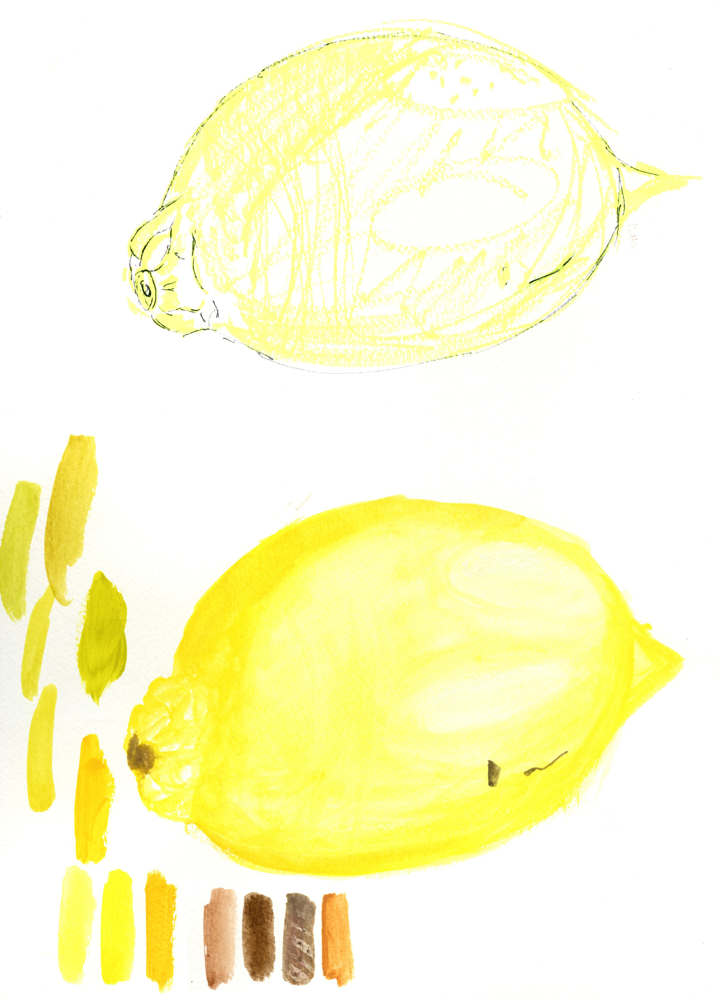

Kreative Sehweisen
Durch gezielte Übungen wurde erforscht, wie Farbe sich entfaltet, mischt und schichtweise aufbaut. Grau entsteht hier ohne klassische Schwarz-Weiss-Kombination, sondern durch subtile Gegensätze und feine Nuancen. Farbfelder, Tupfer und Übergänge dokumentieren den Weg von Experimenten zur künstlerischen Sicherheit. Alltägliche Objekte wie Zitronen, Steine und Flaschen dienten als Studienobjekte für Licht, Schatten und Proportionen. Schrittweise entwickelte sich ein geschärftes Verständnis für Form und Farbklang. Das Projekt präsentiert sich als dynamische Sammlung von Versuchen, Beobachtungen und kreativen Fortschritten, ein sinnlicher Einstieg ins präzise Sehen und gestalterische Handwerk.

Projekt
2025
Editorialprojekt